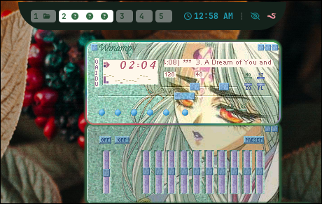

mametchi + hyprland .configs
sept 21,2025
move mametchi with WASD on the keyboard
or with the buttons

--mametchi is just a javascript experiment I tried for fun--
--real post starts below--
I finally got around to playing about with some .config files for hyprland. It's fairly straight forward, and basically the same as designing websites using CSS. It's pretty fun. I love linux for how insanely customizable and free it is. Can do anything you dream of

Here I made a little worm button right on my waybar that executes my music.sh bash script I wrote a while ago that launches winamp through wine. It's not the most exciting but it's not hard to imagine some really cool possibilities this opens up.
I also did some other minor edits on the waybar but I really like the .config I got already. All I did was increase font to make it easier to read and I made the battery % change color depending on % charge left, to make it more obvious I have to plug it in, because I ended up running it out of power a few times being absent minded lol.
I also deleted a few things and made it super minimal as well. And of course added my custom worm-music button. Pretty cool all the things you can customize. Hyprland is amazing, It's insane to me that it's just the project of some college kid

I also played around with the .config files for rofi application launcher. I think it turned out not bad. Just some small edits for now, my design skills aren't good enough to make something from scratch I'd be OK with having to look at regularly lol... (below) is what I based mine off of
I also found the spot in hyprland .config that dictates window spacing so I made it a little wider for the aesthetics, though I know it is completely useless and actually makes you waste some screen space -- but I like it. I think it looks really nice. If I had a bigger monitor I'd make it even wider lol. And those rounded corners on all the windows are so pretty too

# # # # # # # # #
Unrelated to hyprland, but I also wrote a cool bash script that is actually pretty useful to me. With zshell I have a plug-in that will remember past commands and you can auto-complete commands in the terminal. It's super duper handy and I love it, but sometimes it's annoying seeing it try to suggest a random old command I don't use much. (see below)...also below is some fastfetch customization for new terminal sessions
How it does this, is it stores the command as a line in a text file. So I made a bash script to "grep" the file, count the # of lines, as well as accept user command to delete all lines with the word in it. I've actually ended up using it quite a bit.

fairly simple script but quite useful.

Did you make mametchi go all the way down here? lol